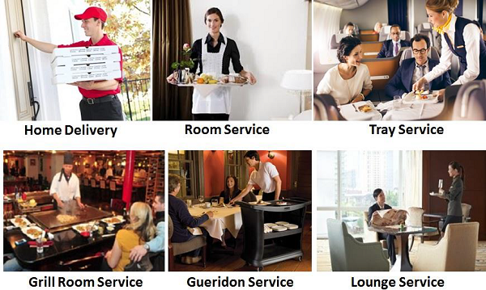

"service provided by us"
In this type of service, the guests enter the dining area and select food items.They pay for coupons of respective food items. They go to food counter and give the coupons to avail the chosen food. The guests are required to take their own plates to the table and eat. In this type of service, the guest orders, pays for his order and gets served all at a single point.There may be may not be any dining area or seats. The following are the different methods of Single Point Service.
In this type of service, the guest orders, pays for his order and gets served all at a single point. There may be may not be any dining area or seats. The following are the different methods of Single Point Service.
Food delivered to a customer’s home or place of work. For example, home delivery of pizza or Meals on Wheels
